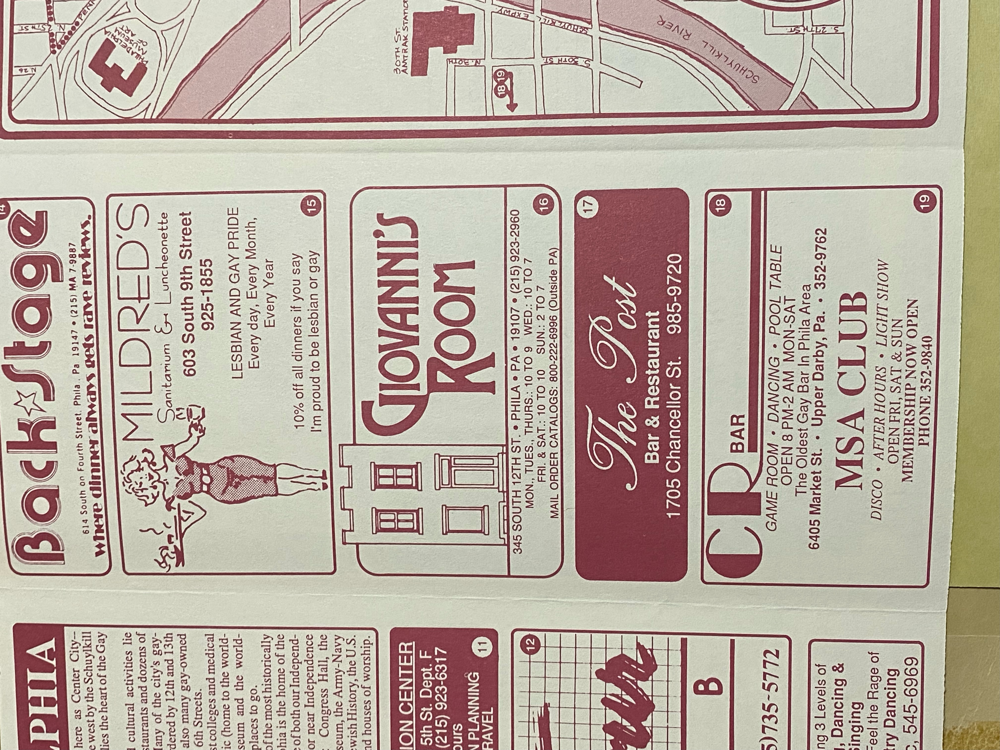
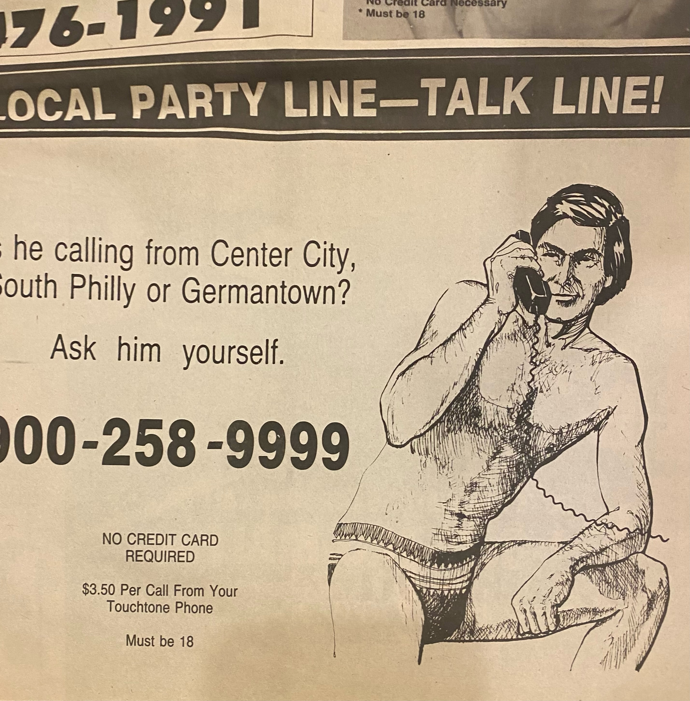
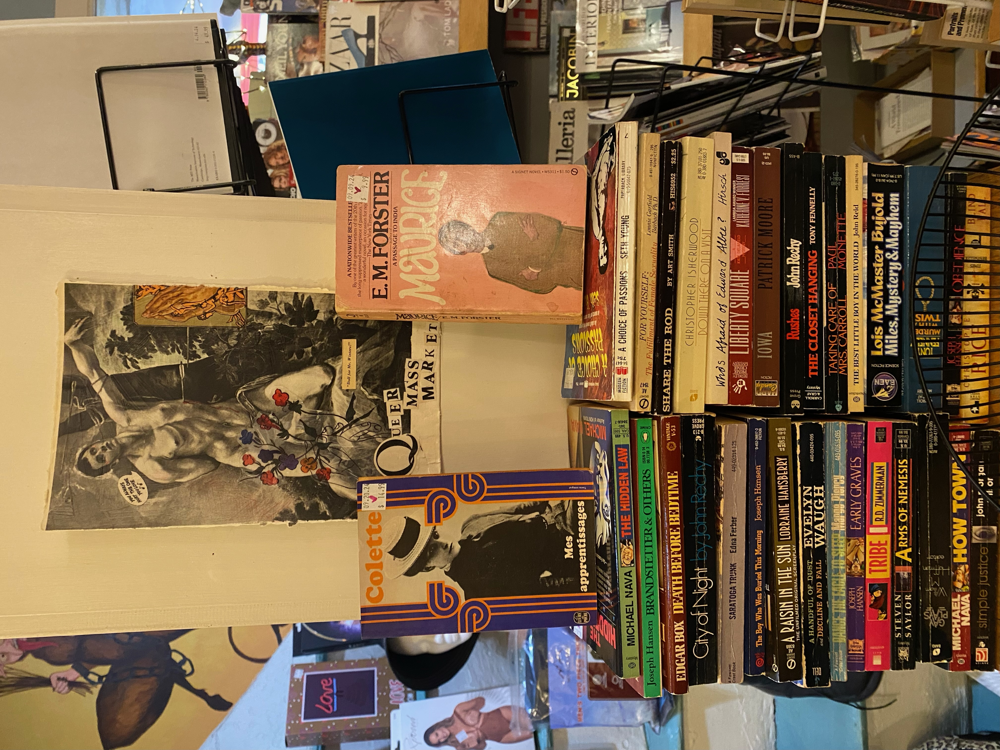
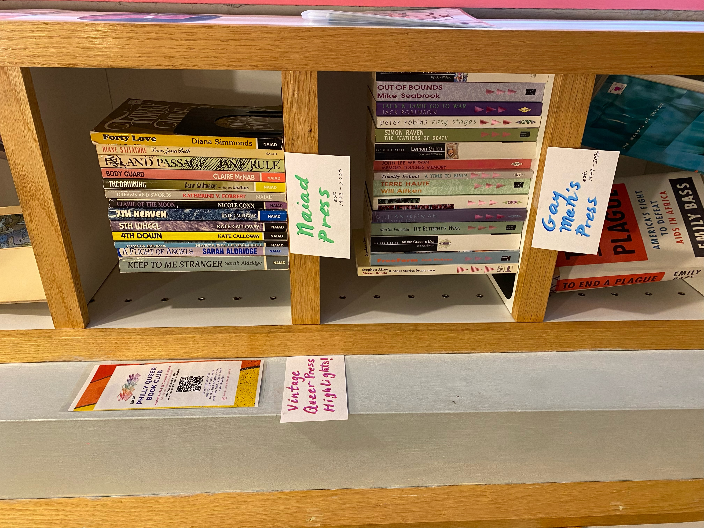
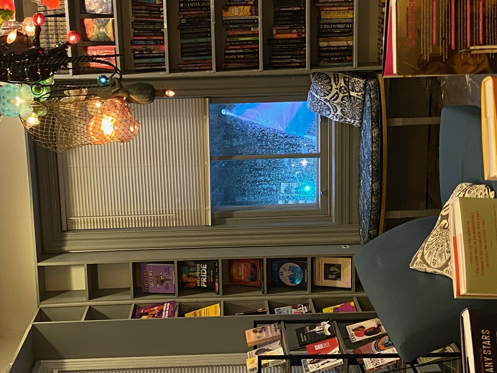

I spent the last and change working as a bookseller at Giovanni’s Room in Philadelphia, which is the oldest queer and feminist bookstore in the country. I started coming to this bookstore as a teenager and it has served as a place of queer refuge to me for a long long time. I volunteered on and off in undergrad, and when a position opened up when I moved back to Philly, I already knew what I was in for. I loved working there, because more times than not it involved working with archival materials. I learned all about queer history because I was constantly in contact with older queer literature and ephemera.

Retail work can be totally mindless if you let it, but it was my mission to get the most out of my time at the store. When we would get a donation of say, 1970s leather daddy books, I would research them. Who was the press? Does it still exist? Who are the writers and editors? What are they up to now? What aspects of history are important to remember when thinking about the context of this book?
 It really was a once-in-a-lifetime opportunity to be in touch with all of these materials on a daily basis. It no doubt made me a better archivist and a better person. It is always important to know your history, and having access to tangible materials puts everything in perspective.
We rarely got lesbian book donations though. This is probably due to a number of things. The two that come to mind are that Gayborhood in Philly, where the bookstore is, is predominantly gay men, therefore the books being donated were mostly from them. Also, older lesbian literature is now considered rare, i.e. valuable. People are less likely to give it away and more likely to keep it or sell it for a lot of money. On the exciting days where we did get lesbian books in, I always spent extra time doing research!
 Working in a bookstore means more than reading a lot of books, you start to memorize a lot about books. Their spines, their covers, the logos of the different presses, names that keep reappearing. At a specialty bookstore like Giovanni’s Room, you get asked to give a lot of specific suggestions. If I was in that store right now, I could find you a stack of trans femme fiction or Black lesbian poetry in no time at all. Retail work is repetitive, but no matter what you work in, if you’re any good at the job, you start to know your stuff.